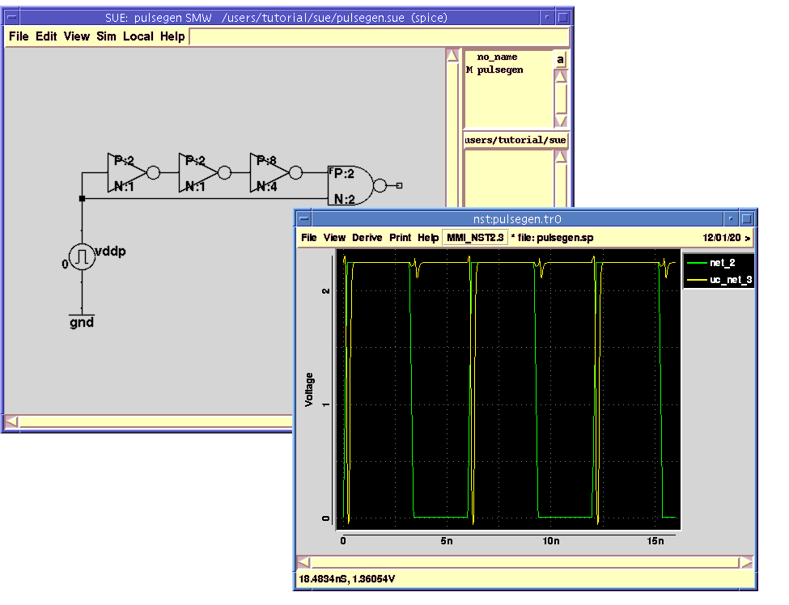
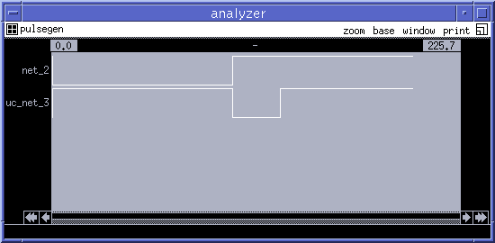

SUE Design Manager Tutorial |
Part 3
Simulating Circuits With SPICE And IRSIM
Simulating Circuits
- The main purpose of creating schematics is to netlist, simulate and verify them. In SUE this is a snap! In the next few sections you will get a chance to simulate the same circuit in three different simulators: HSPICE, IRSIM, and Verilog.
Running HSPICE
- If you don't have HSPICE installed, skip to the Running IRSIM section. If you have never run HSPICE before, don't worry.
- First, make sure the following two things are set up:
- You have a circuit loaded into SUE that you want to simulate. The "
pulsegen" circuit you just entered will work fine. If you just started SUE again, load the circuit with theOpencommand in theFilemenu. Your schematic should look like Figure 12-a.
- Insure that you are in
SPICE mode. On the title bar of SUE you should see `(spice)' which means you are inSPICE mode. Otherwise, go toChange Simulation Modein theSimmenu and click onspiceand thenDone.
- OK, pay close attention. To run HSPICE you have to do the following set of complex tasks:
- That's it!
- This single command (
SPICE itin theSimmenu) does the following:
- First, it creates an HSPICE netlist of the current schematic which is the same as the hotkey Shift-n or
SPICE Netlistin theSimmenu.- Second, it runs a script that starts HSPICE either on your local machine or on a remote server depending on the configuration (assuming the script is set up).
- When the HSPICE job is finished, it starts the Micro Magic Tools NST Waveform Viewer (included with SUE) and loads the SPICE data file (the
.tr0file) into it. This can also be done by Ctrl-i orInit Probein theSimmenu.
Displaying HSPICE Waveforms From SUE
- Now you will start to see some of the real power of SUE.
- To see how your circuit simulated, you would simply select one of the wires in your schematic and then type p or
Plot Netin theSimmenu. The waveform for that wire should show up in the NST window.
- Select the wire at the output of the
nand2gate and hitp. You might have to carefully select the `open' on the output of thenand2gate if you didn't add a wire there. Do you see the pulse output? Remember the pulse is low going because we have anand2instead of anand2. Your waveforms should look like Figure 12-b.Figure 12: Displaying HSPICE Waveforms: a) "pulsegen" Schematic; b) NST With Two Waveforms

- Note that if you changed any of the parameters for the
pulse_icon, your waveforms will look different.
- There are lots of plotting options in the
Simmenu such asPlot Old Net, Unplot Net, Plot Net & Remember, etc.Plot Old Netwill plot the same net from the last HSPICE run. So you can tweak a device size or change a gate, rerun HSPICE with h, and compare the old and the new waveforms!
- You can plot net waveforms at any level of the hierarchy just as easily as at the top. SUE does all of the messy translations for you.
Running IRSIM
- We now are going to run IRSIM on your same circuit.
- IRSIM is a switch level simulator from Stanford University. We have included it with SUE. In any other schematic editor you would have to draw a different schematic to run IRSIM, but not with SUE. SUE can run SPICE, IRSIM, and Verilog all from the same schematic!
- To run IRSIM, we first need to switch simulation modes:
- If you had an NST window up from the previous section, SUE closes it since IRSIM comes with it's own waveform viewer (called Analyzer).
- SUE creates a SIM netlist for your schematic (
SIM Netlist) and then starts IRSIM in interactive mode with the SIM netlist and brings up the waveform analyzer (Init Probe).
Interacting With IRSIM
- You are now running IRSIM and the time is "0ns". Furthermore, no inputs are set. In SPICE we set up a driving function with the
pulseicon. In IRSIM (or Verilog) mode, this type of simple waveform is usually too simplistic and thus doesn't netlist to anything.
- Let's setup an input:
- Since this is the only input to the circuit we can now "step time" forward.
- Let's look at another node:
- Notice that the
nand2output went low, and then some time later back high. Yep, we actually have a pulse generator. Your waveforms should look something like Figure 13.Figure 13: IRSIM Waveform With Two Nets

Net Names When Netlisting
- Did you notice that you haven't named a single net, however, you just finished simulating a schematic in two different types of simulators? In SUE, you only need to name ports and globals. SUE will create unique names for all other unnamed nets.
- There are three ways to name a net in SUE:
- By connecting the net to an I/O port with either the "
input", "output", or "inout" icons.- By connecting the net to a global signal name with the "
global" icon.- By adding a "
name_net_s" icon to a net and labeling it with a name. (Do this by double-clicking Button-1 on the icon, and then entering a net name.)
- Otherwise, SUE makes up a name for the net of the form: "
net_#". SUE will also make up unique names for devices and icons if you don't name them.
- If you want to see what SUE has named a wire, just select it and look at the
SUE Message Area. Note that you have to netlist first to see the net name.
| ----- Micro Magic ----- |